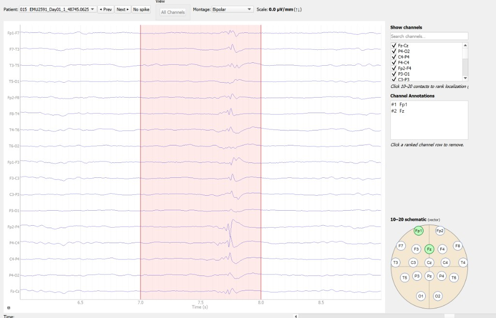
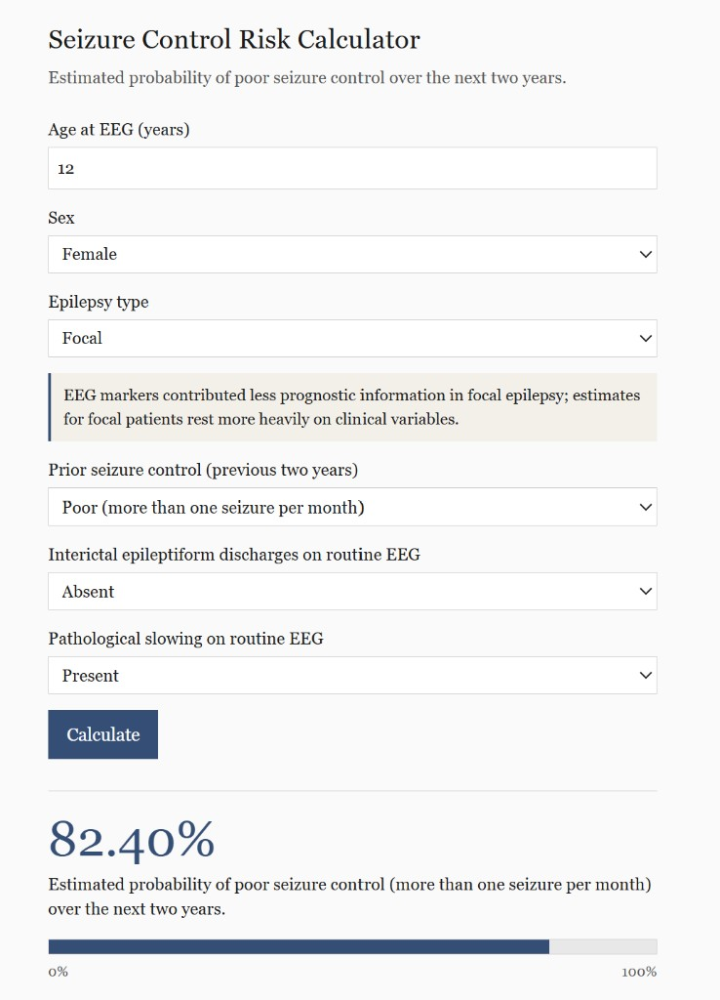
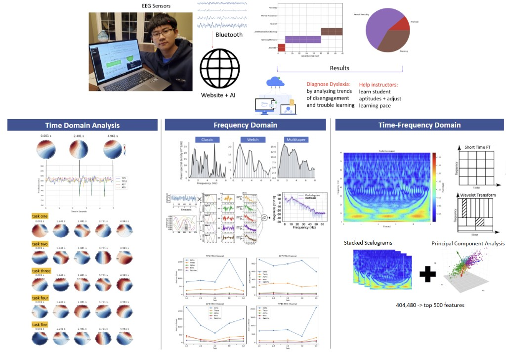
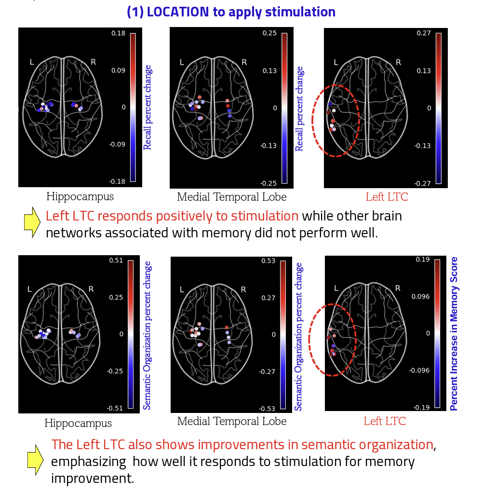
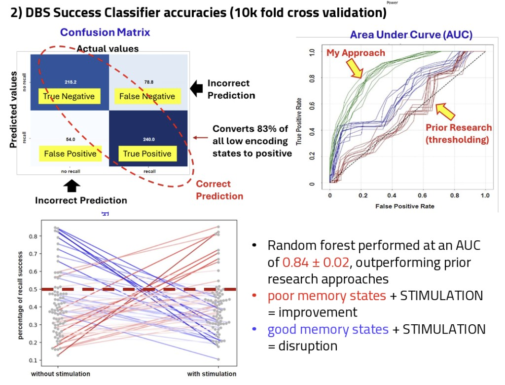
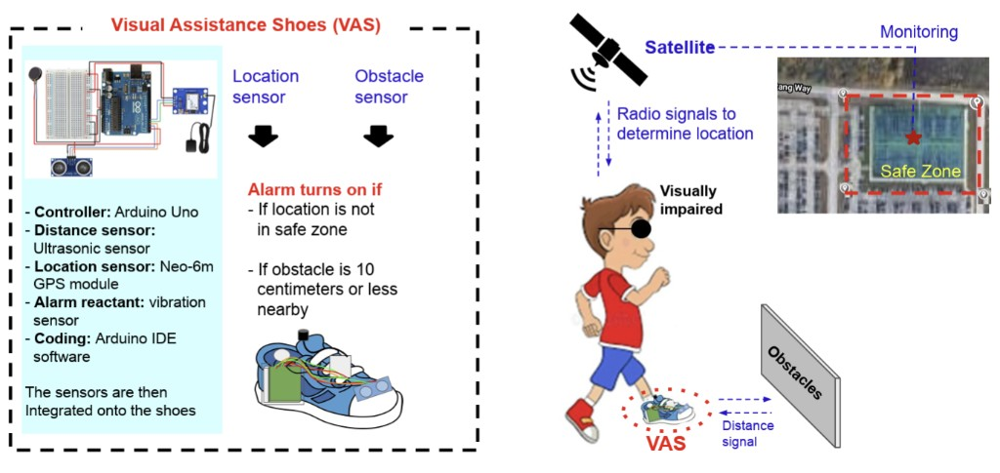
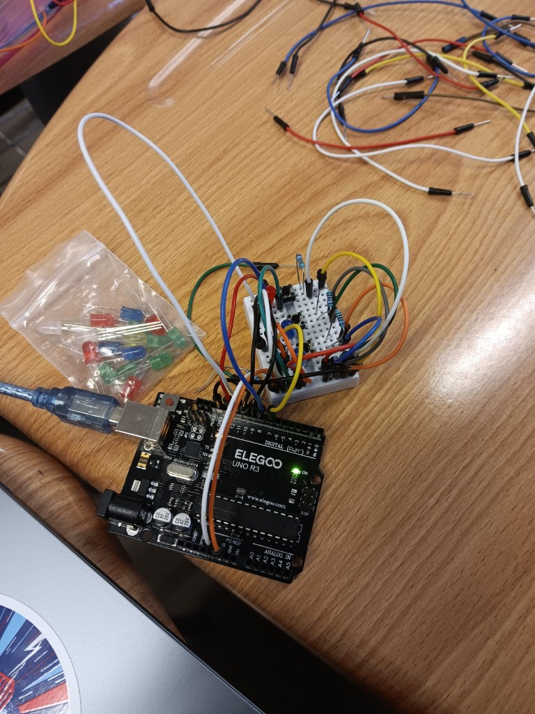

explorations.txt
← Ryan's desktop
01
02
03
04
05
06
Scientific Explorations
A shelf for experiments, clinical tools, and things worth figuring out.

GUI for easy clinical annotations of neurophysiological patterns

Creating a clinical calculator website for neurologists after analyzing 1,300 epilepsy patients for clinical notes and brain abnormalities

Collecting brain waves from my family members and creating a website for brain wave classification


Deep brain stimulation in epilepsy patients

Visual Assistance Shoes (patent)
